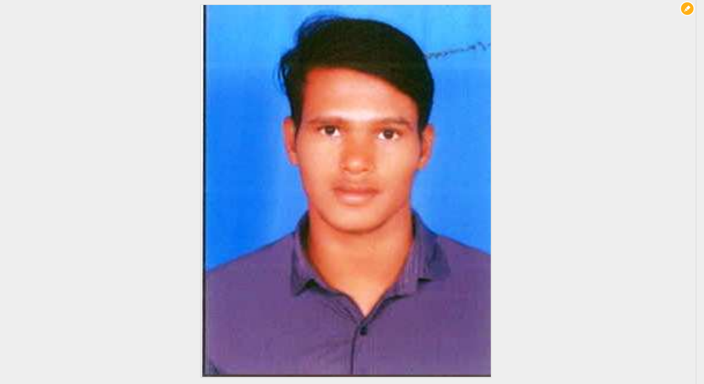

NABIGARI VENKATESH
Software Test Engineer
Contact No: 8464894578
Email ID: nabhigariv@g,ail.com
SUMMARY
Accomplished Software Test Engineer is skilled in developing and implementing test programs. Focused to identify and resolve complex technical issues quickly. Adept in automated testing tools. Collaborates well to improve team success against program targets.
PROFESSIONAL SUMMARY
- 1+ Years of experience in Software Automation Testing.
- Good experience in writing manual test cases as per the requirement.
- Strong experience in Web automation.
- Expertise on SimplifyQA tool & Selenium Web Driver automation tool.
- Well acquainted with various Software Development Life Cycle (SDLC) models and integration with Software Testing Life Cycle (STLC) process.
- Prioritized bugs through focused data collection and analysis, driving continual innovation.
- Detecting Defects and classifying them based on Severity and Priority and coordinated with the development team for issues and resolution of defects.
- Having very good experience in Relative & Dynamic XPath writing.
- Well participation in Sprint Planning Meeting, Daily Scrum Meet, Sprint Retrospective Meeting and Project Backlog refinement Meeting.
- Well worse in Debugging, Executing and Finding the issues in the script.
- Having Experience in defect reporting and doing Retest and Regression Test on Modified Sprint.
- Good hands-on experience on Test Management Simplify QA for Execution, Defect Reporting and Defect Tracking.
PROFESSIONAL EXPERIENCE SUMMARY(Total Experience: 1+ Year)
Currently working in the Simplify3x with 1+ Years of experience in Software Automation Testing.
TECHNICAL SKILLS
- Languages: Core Java,HTML,CSS,JAVA SCRIPT
- Domain Expertise: Health Care,Pharma.
- Automation Testing Tool: SimplifyQA,Basic Selenium.
- Test Management Tool: SimplifyQA.
PROJECTS WORKED ON
Roles and Responsibilities:
- Involved in Execution of Automated Test cases and analyze test cases and fixing failed test cases.
- Attended daily Scrum calls.
- Identify the Test Cases based on requirement documents of the application.
- Good experience in Execution of Regression, Sanity, Smoke in Suites.
- Prepare all reports related to software testing carried out.
- Attending the Application walkthrough sessions.
EDUCATION
PERSONAL DETAILS
- LANGUAGE KNOWN: English, Telugu
- NATIVE: India | Andhra Pradesh | Vijayawada
- WORK LOCATION:Bangalore
Thanks
Venkatesh